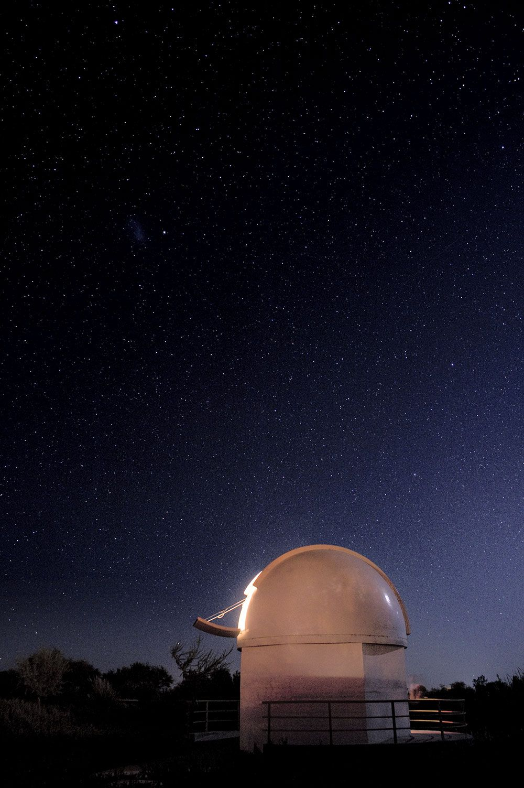

오늘 밤 관측 지수
2026-10-05 월 · 개천절 대체공휴일
91
오늘 밤은 20~22시가 가장 맑고, 23시부터 자정까지는 구름이 지나가 지수가 내려갑니다.
- 일몰
- 18:05
- 천문박명 끝
- 19:31
- 월출
- 01:22
- 천문박명 시작
- 05:00
- 일출
- 06:26
달 나이 24.2일 · 조명률 29%
하현을 지나 그믐으로 가는 달로, 새벽 1시 무렵 동쪽에서 뜬다.
시간대별 관측 지수
오늘의 하늘- 18시지수 23등급 D구름 10%달 고도 지평선 아래
- 19시지수 54등급 C구름 5%달 고도 지평선 아래
- 20시지수 85등급 A구름 5%달 고도 지평선 아래
- 21시지수 91등급 A구름 5%달 고도 지평선 아래
- 22시지수 86등급 A구름 10%달 고도 지평선 아래
- 23시지수 71등급 B구름 35%달 고도 지평선 아래
- 00시지수 67등급 B구름 45%달 고도 지평선 아래
- 01시지수 80등급 A구름 20%달 고도 지평선 아래
- 02시지수 86등급 A구름 10%달 고도 6°
- 03시지수 85등급 A구름 10%달 고도 17°
- 04시지수 76등급 B구름 15%달 고도 29°
- 05시지수 71등급 B구름 25%달 고도 40°
- 막대 · 큰 숫자
- 관측 지수 0~100
- A · B · C · D
- 관측 적합 · 밝은 천체 위주 · 달과 행성만 · 관측 어려움
- %
- 구름량
- °
- 달 고도
지수 계산식과 입력값
지수 = 0.40 × 구름 + 0.15 × 달 + 0.15 × 투명도 + 0.15 × 시상 + 0.15 × 하늘 밝기. 각 항은 0~100이다. 해가 지평선 아래 18°보다 얕으면 박명 계수(0.3~1)를 곱하고, 구름량이 80% 이상이면 20을 넘지 않는다.
| 시각 | 구름량 | 달 항 | 투명도 | 시상 | 하늘 밝기 (SQM) | 박명 계수 | 지수 |
|---|---|---|---|---|---|---|---|
| 18:00 | 10% | 100 | 60 | 40 | 20.9 | 0.30 | 23 |
| 19:00 | 5% | 100 | 80 | 60 | 20.9 | 0.64 | 54 |
| 20:00 | 5% | 100 | 80 | 60 | 20.9 | 1.00 | 85 |
| 21:00 | 5% | 100 | 100 | 80 | 20.9 | 1.00 | 91 |
| 22:00 | 10% | 100 | 80 | 80 | 20.9 | 1.00 | 86 |
| 23:00 | 35% | 100 | 60 | 60 | 21.2 | 1.00 | 71 |
| 00:00 | 45% | 100 | 60 | 60 | 21.2 | 1.00 | 67 |
| 01:00 | 20% | 100 | 80 | 60 | 21.2 | 1.00 | 80 |
| 02:00 | 10% | 96 | 80 | 80 | 21.2 | 1.00 | 86 |
| 03:00 | 10% | 88 | 80 | 80 | 21.2 | 1.00 | 85 |
| 04:00 | 15% | 80 | 60 | 60 | 21.2 | 1.00 | 76 |
| 05:00 | 25% | 74 | 60 | 60 | 21.2 | 1.00 | 71 |
구름량·투명도·시상·하늘 밝기는 10월 5일 기준 가상값이다. 달 고도와 조명률, 해의 고도는 관측지(북위 36.9°, 동경 128.3°)에서 계산했다. 하늘 밝기는 여늘시 도심 경관 조명이 꺼지는 23시부터 20.9에서 21.2로 어두워진다.
21:00 지평선 위 천체
천체 도감오늘 회차
관측 프로그램공지
전체- 10.0210월 6일(화) 휴관
- 09.28토성 관측회 10월 금·토 운영
- 09.2510월 저녁 공개 관측 21:30 회차 추가
